52 неделя 2021 Wordy Weekend
Старый повар на проводе. Сейчас поведаю о Wordy Weekendе из 2021(22). Но перед этим небольшой прикол:
Особый Word Hunt 1 января
Утром 1 января быстренько прошёл вот такой Word Hunt:
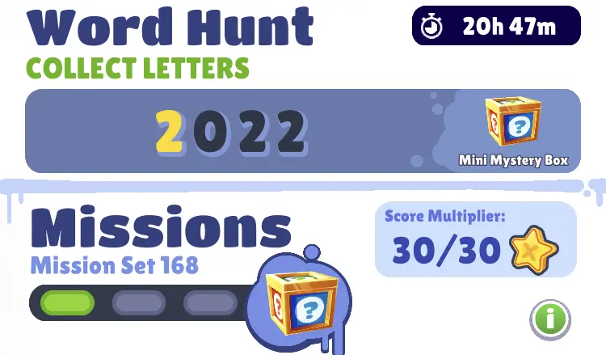
Вот такой прикол. Но стоит заметить, что в игре это
выглядело немного стрёмно: так как обычно слова состоят
только из букв, видимо для цифр не было 3D модельки и...
Во время сбора букв вместо цифр 2 и 0 отображались
только буквы A. Есть догадка, что программисты
написали код так, что если символ - цифра, то отображается
первая буква (в английском алфавите это A). Но я ни
в коем случае не программист, так что я точно не знаю.
Так или иначе, интересный феномен, пора перейти к основному контенту :)
Wordy Weekend
В общем, для начала я просто размещу тут вот такой списочек:
- Jake
- Fresh
- Tagbot
- Tasha
- Zoe
- Brody
- Prince K
- Jolien - пропуск
- Amira
- Mei - пропуск
- King
- Jasmine - пропуск
- Ez
- Izzy - пропуск
- Lee
- Salma - пропуск
- Jaro - пропуск
Это просто порядок в котором были герои с пометками если я пропускал их (те что у меня нет).
Jake
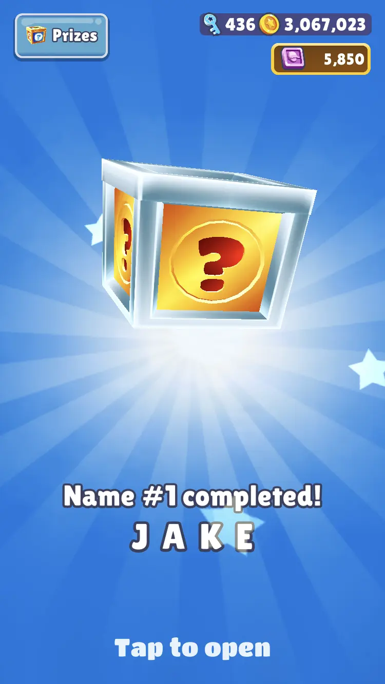
Fresh
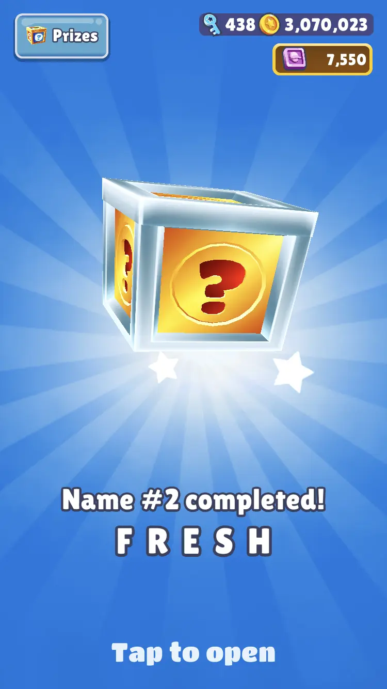
Tagbot
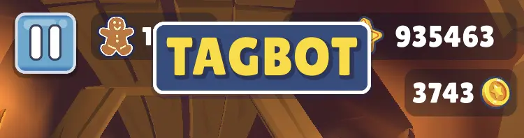
Tasha
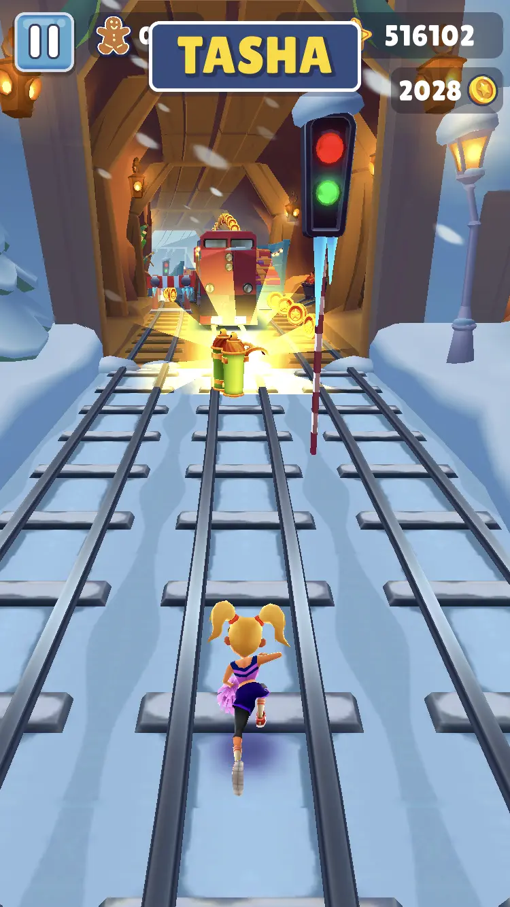
Zoe
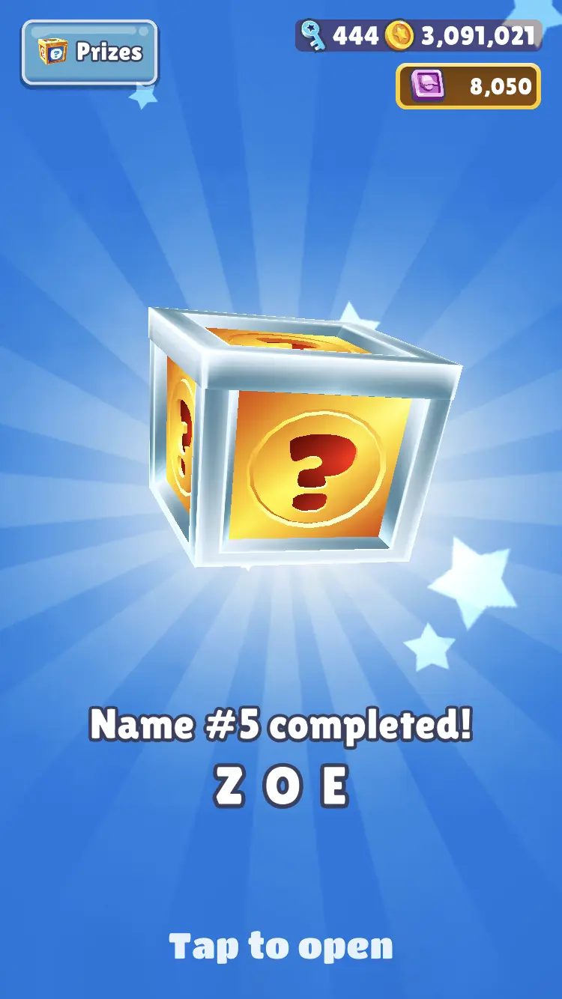
Brody
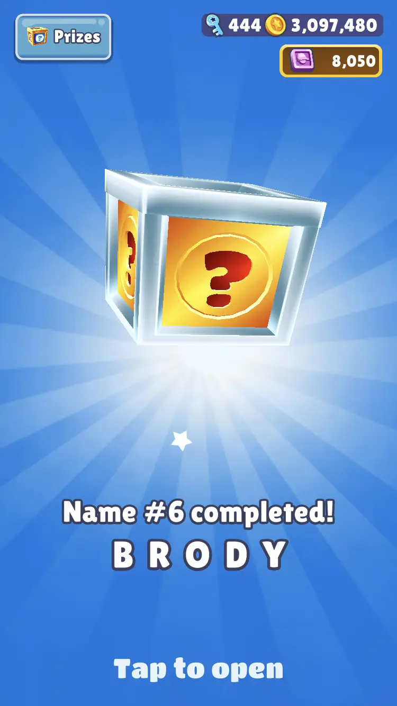
Prince K

Jolien - пропуск
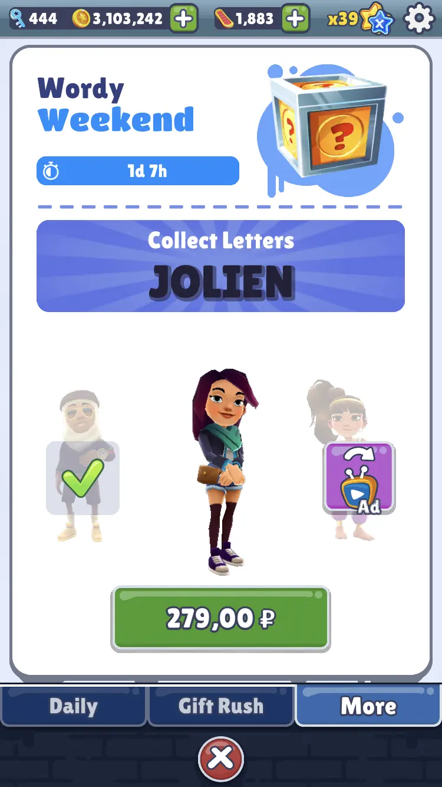
Amira

Mei - пропуск
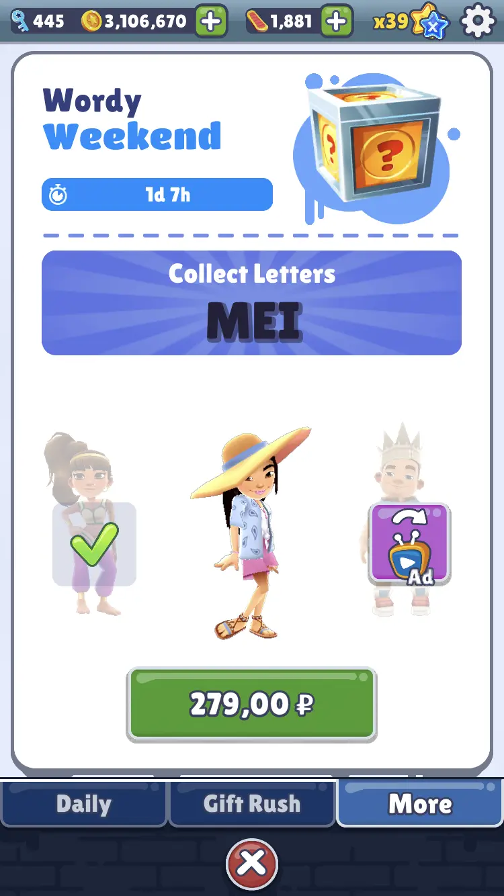
King
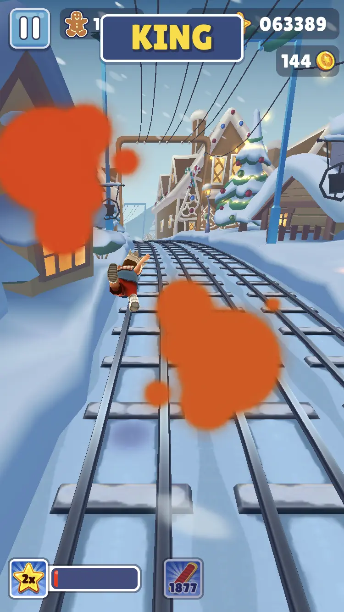
Jasmine - пропуск
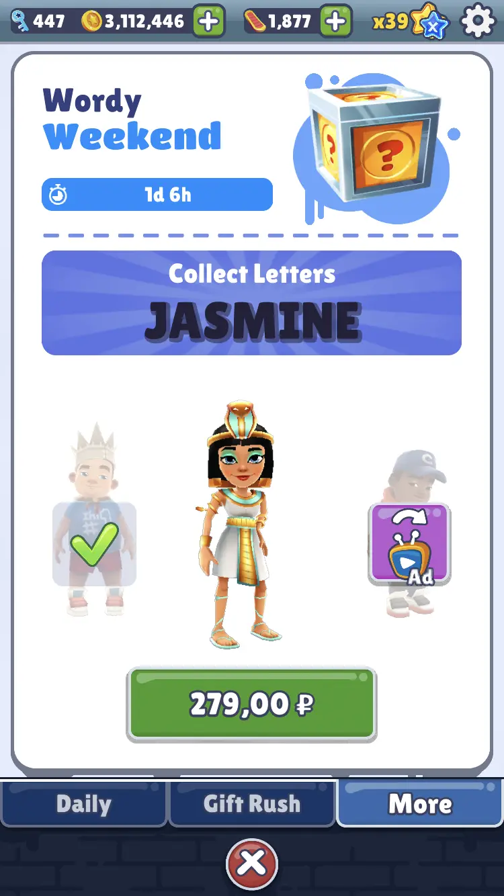
Ez
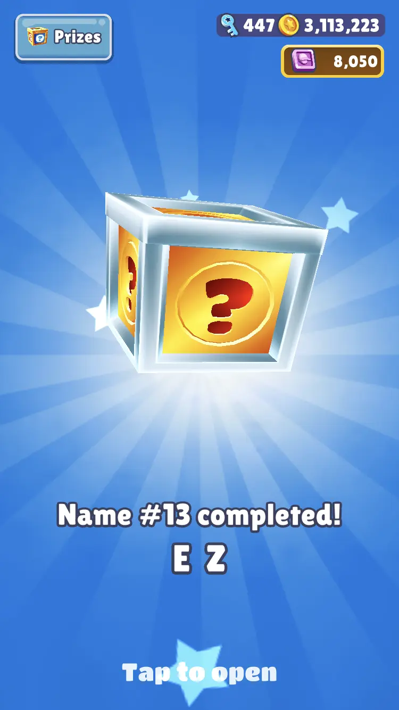
Но тут одним скриншотом не обошлось. Тут я просто устал их делать и поэтому решил ;) Почему бы не снять хоум видео? Я ведь всё-таки старый повар, мне так привычнее и удобнее.
Там можно впервые увидеть мой стиль игры. Мои разные выпендрёжные приколы и всё такое. Если досмотрел до конца - увидел небольшой скит. Есть идея делать скиты в каждом видео и всегда разные. В общем и целом, скоро увидишь, а сейчас пора добить оставшихся героев.
Izzy - пропуск
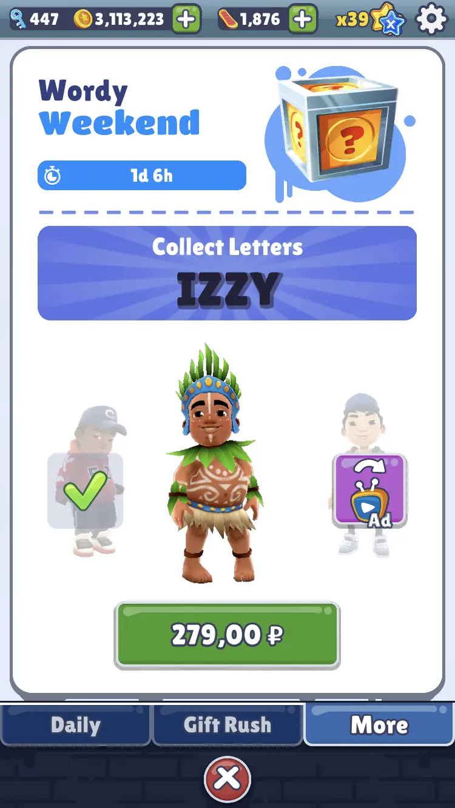
Lee
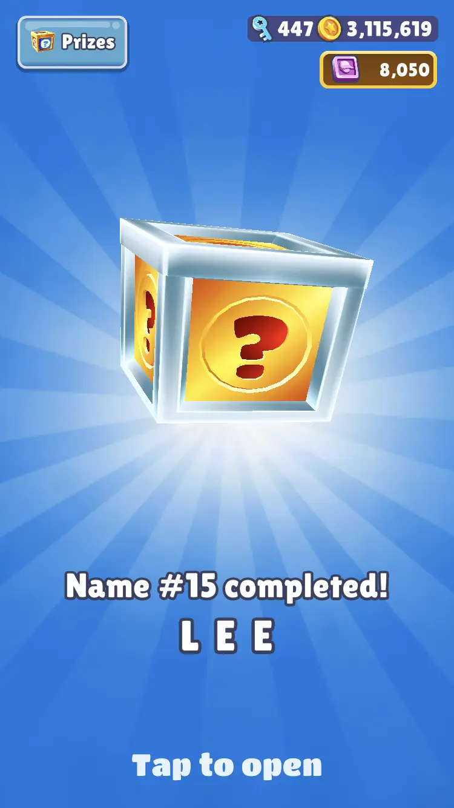
Salma - пропуск
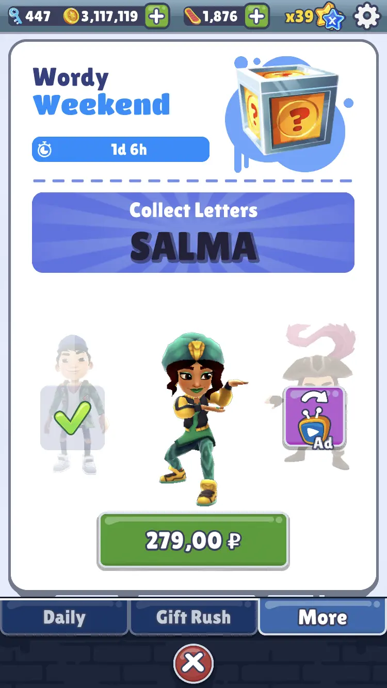
Jaro - пропуск
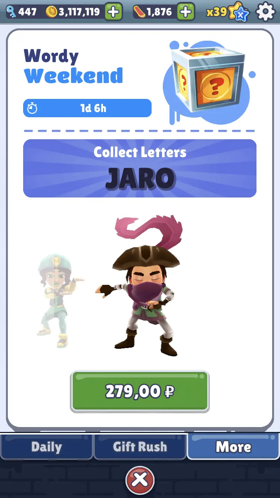
Итоги
Этот Wordy Weekend оказался довольно необычным,
и я считаю, он имеет на это все права
(всё же Новый Год 🎉🎉🎉).
По итогу у меня вышло покрыть лишь 11/17 персонажей,
что довольно неплохо.
Однако я думаю поработать над этим на следующей неделе.
Если подумать, 6 × 279 = 1,674 - не так уж
и много. Моё мнение сопряжено с тем, что создатели
игры не заслуживают холодного отношения за сотворённый
шедевр.
В любом пути, увидимся в следущем посте 😊